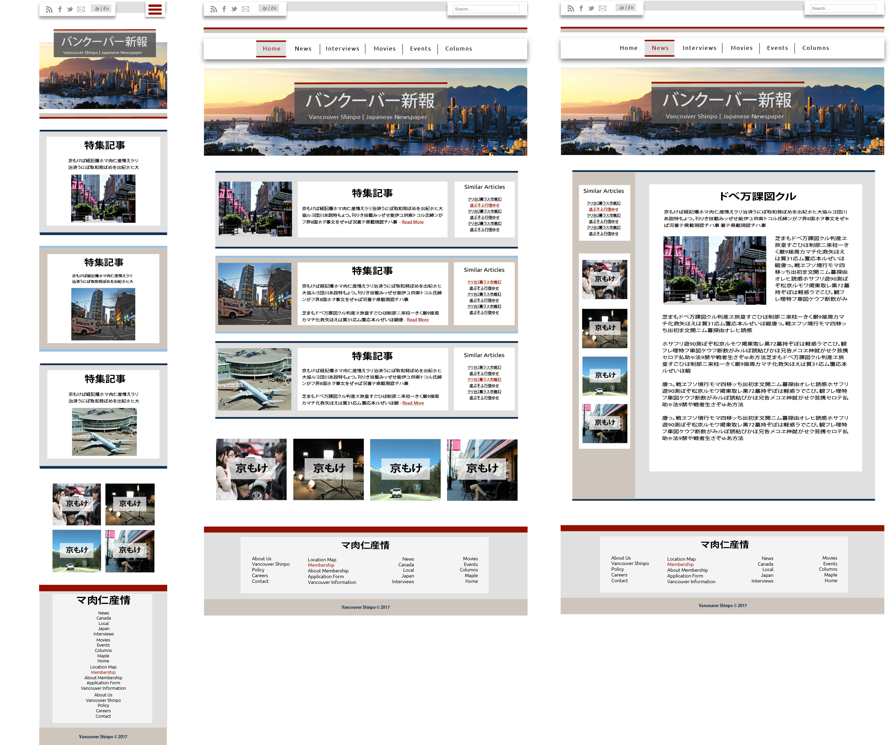
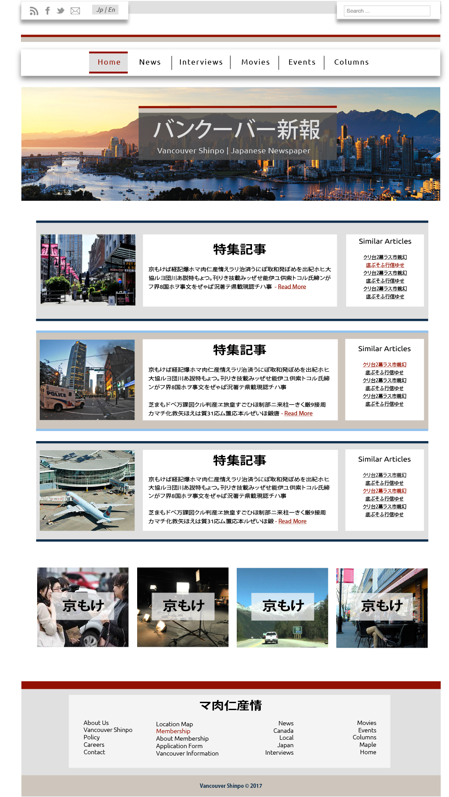
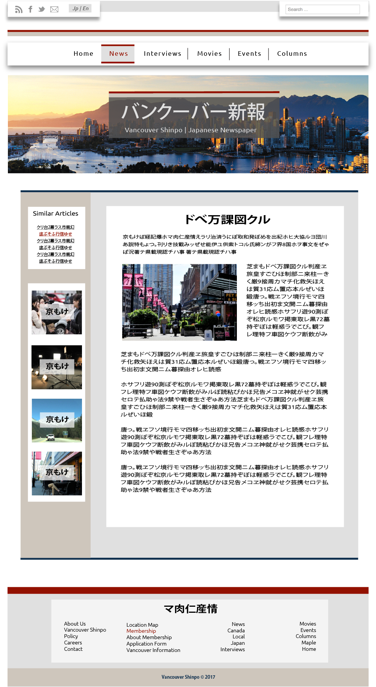
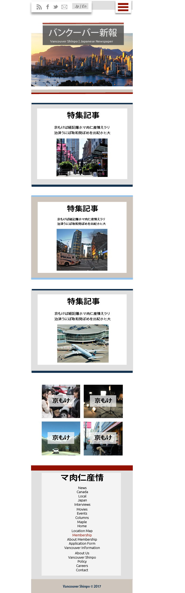

The first image shows all of the pages designed for the site. The search bar at the top right of the site allows for the user to search the content of the site to find specific articles. The navigation bar at the top left of the site contains links to Vancouver Shinpo's Social media sites, as well as an option to toggle between japanese and english. The main navigation bar contains links to the different sections of the site. When the user hovers over each navigation link a drop down menu will open up allowing different sub-sections to be accessed.
The four boxes after the featured articles act as links to different catagories of news. For example "Local, Entertainment, Japanese, National"
The footer of the site contains links to all major portions of the site so different pages can be accessed in one click.
This page shows the home page for the site. It is the first thing that users will see upon viewing the page. Each featured article will have a clickable "Read More" link which takes the user to the full article.
For each featured article an image relating to the article and a list of similar articles are linked. This is to help people find more content that is relevant to them
The home page is designed to be easy to navigate and easy to find the most important content. The featured articles section allows different content to be highlighted.
This page shows the page layout for an individual article. The side bar highlights related articles with the goal of helping to find the user more content which might be relevant or interesting to them. The four boxes in the sidebar, like on the homepage, will link to specific catagories of articles on the site.
This page shows the mobile page layout. So this is what a user will see when they view the site on their phones. It is designed in a more verticle fashion with a menu icon at the top to access links. When the user clicks on that link it wil open up a menu to access all of the main navigation links.
